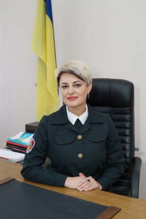

Зображення 
Бабак Лілія Вячеславівна, директор школи
З приємністю вітаю вас!
Непростою є шкільна наука. Не кожному вона легко дається. Хтось швидко упіймав хвилю учнівства – і отримує задоволення від навчання, дехто відкриває в собі лідерські якості і бере активну участь у житті школи. А комусь подобаються окремі навчальні предмети та спілкування з однокласниками і вчителями. Але школа не тільки дає знання, вона вчить людським стосункам та моральним чеснотам. Тут отримуєш премудрості шкільного життя та опановуєш найскладнішу науку – бути Людиною.
Шепетівський навчально-виховний комплекс №3 у складі "Загальноосвітня школа І-ІІІ ступенів ім. Н.Рибака та ліцей з посиленою військово-спортивною підготовкою" Хмельницької області – це особливий у моєму житті заклад. Тут за партою я здобувала знання як учениця, згодом доводила теореми в якості вчителя, а сьогодні розв’язую задачі як керівник освітнього закладу нового типу.
Люблю свою роботу, напевне, тому, що пройшла всі сходинки професійної кар'єри від рядового учителя математики до директора школи. Так сталося, що була у витоків заснування військового ліцею: мені довелося брати участь у розробці концепції його розвитку та функціонування, тому чітко усвідомлюю відповідальність як керівник сучасної школи, зокрема закладу нового типу. Прагну вибудовувати роботу творчо, адже моїм життєвим кредо стали слова Джона Паттерсона: "Щоб реалізувати свої мрії в реальний успіх, Ви повинні працювати. Працювати багато, наполегливо, постійно - це шлях до вдосконалення і максимального результату».
Переконана, що директор освітнього закладу - це професійний менеджер, майстерний учитель, хороший діловий партнер і дбайливий господар. Пишаюсь тим, що очолюю творчий, працездатний, високопрофесійний колектив учителів-однодумців, готовий на практиці реалізовувати і втілювати в життя передові теорії і програми української освіти. Дорожу нашою командою, намагаюсь їй відповідати і виправдовувати її довіру. Успішний японський менеджер минулого сторіччя, один з творців компанії «Соні» - Акіо Моріта – справедливо стверджував: «Ніяка теорія, програма або урядова політика не можуть зробити підприємство успішним; це можуть зробити тільки люди... Людина, що займає керівну посаду і наділена довірою, покриє себе ганьбою, якщо не виправдає цю довіру». Тому вважаю пріорітетом у своїй роботі - прогнозування успішних освітніх проєктів. На шляху реалізації поставленої мети навчилася "тримати удар" і брати відповідальність на себе. У цьому завжди допомагають комунікабельність, почуття гумору, ерудиція і життєвий досвід. Вирішувати конкретні завдання допомагають принципи порядності, чесності та справедливості.
Дотримуюся, сформульованого мною, девізу школи: «Завжди на висоті!!!»